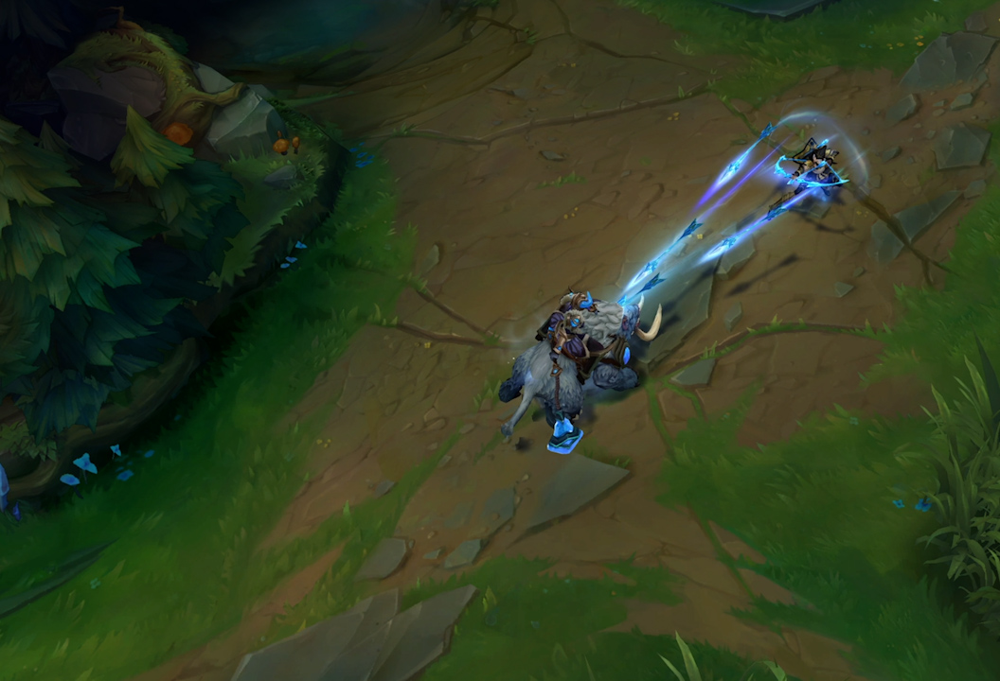
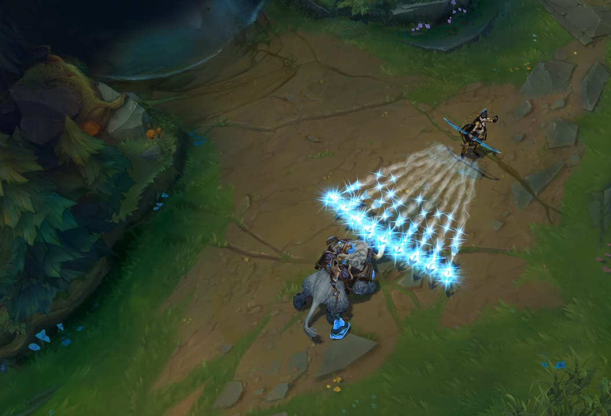
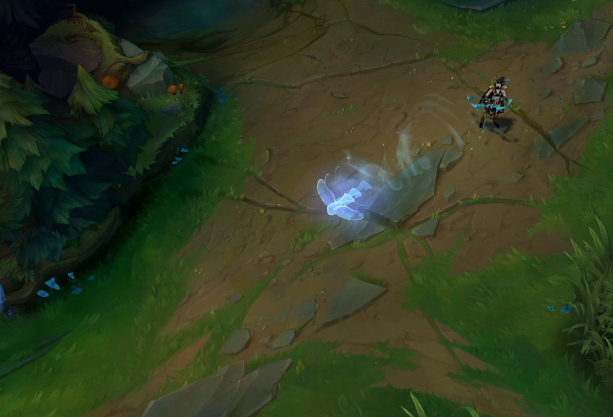
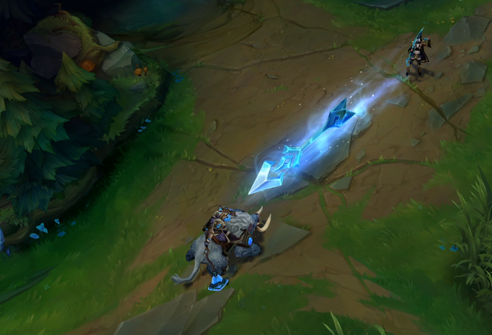

q
ranger's focus
Ashe builds up Focus by attacking. At maximum Focus, Ashe can cast Ranger's Focus to consume all stacks of Focus, temporarily increasing her Attack Speed and transforming her basic attack into a powerful flurry attack for the duration.
Picture from Ashe, the Frost Acher - League of Legends, Riot Games
w
volley
Ashe fires arrows in a cone for increased damage. Also applies Frost Shot.
Picture from Ashe, the Frost Acher - League of Legends, Riot Games
e
hawkshot
Ashe sends her Hawk Spirit on a scouting mission anywhere on the map.
Picture from Ashe, the Frost Acher - League of Legends, Riot Games
r
enhanced crystal arrow
Ashe fires a missile of ice in a straight line. If the arrow collides with an enemy Champion, it deals damage and stuns the Champion, stunning for longer the farther arrow has traveled. In addition, surrounding enemy units take damage and are slowed.
Picture from Ashe, the Frost Acher - League of Legends, Riot Games